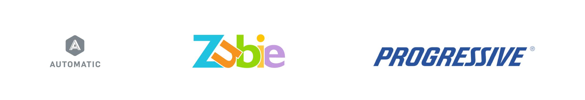

Timeline: Oct - Nov 2017
Project Type: Designathon, School Project
My Role: Product Designer
Tools: Figma, Illustrator, inVision
Skills: User Research, Interaction Design
MEA is a proof of concept design of an app that provides incentives in exchange for driving data which contributes to autonomous vehicle (AV) development. My team’s hypothesis is that this creates a positive feedback loop where users can earn money for driving and AV companies can improve their algorithm for increased road safety.
I took a class at UCSD that collaborated with Design for San Diego, a citywide hackathon hosted by The Design Forward Alliance. 2017's theme was to improve the experience of transportation in San Diego. I teamed up with 4 other designers.
We began our needfinding research with San Diego’s Vision Zero Initiative, which proposed to have 0 commuter casualties by 2025. We began by observing drivers at the Fatal 15 intersections, which are famous for the highest number of pedestrian injuries and deaths in the past 15 years.
Field Observations
We interviewed J walkers at these intersections about their general commuting behaviors. The biggest complaint was about the distance between the crosswalks and bus stops.
Field notes

We also conducted an online survey asking people about their driving patterns. The replies indicated that people knew distractions were the main cause for accidents, but it was difficult to stop such behaviors. Users typically thought that they were good drivers, even though more than half of them were involved in an accident.
Survey Data


Driver Confidence

We clustered common user needs from our research together. Many accidents were caused by drivers not paying attention to their surroundings. There was a repeating pattern in how users allowed themselves to engage with distractions- like using their phones or talking with someone.
Needfinding

Our professor's research showed that driving becomes more passive over time because drivers get accustomed to technology and the environment. They slowly develop motor functions that react subconsciously to environmental cues.
Double Diamond

The DMV reports that more than 90% of autonomous vehicle accidents are caused by humans.
The AVs make the correct decisions, but in such an irregular fashion that human drivers are unable to react in time. Human errors on the road could be predicted more accurately if AVs had more data about how humans react to unexpected situations. We pivoted to thinking of ways to improve the driving data for AV companies.
Ideation

Hypothesis: "Companies need an abundance of data on everyday human driving patterns to simulate a more human like AV driver because humans don't know how to react to an algorithmically perfect machine"
Our advisor, Mr. Robinson pointed out that our problem would be worth pursuing because the current data available to AV companies comes from “super-users” such as Uber drivers and Tesla owners, who do not represent the average driver. Longitudinal data from everyday users over time can reveal interesting fluctuations in driving patterns and trends.
Mr. Robinson (Design Forward CEO)

Primary
Stakeholders:
Companies and academic institutions in need of driving data for
AV research.
Secondary Stakeholders: Everyday drivers need an incentive to give up their driving data.
We sent out another survey to 30 users. Most college students would give up their driving data for
monetary incentives.
Professors and school employees wouldn’t sell their data, saying that their privacy is more important.
Obtaining college driving patterns was enough for us
because research shows that drivers between ages 20 and 24 cause the most accidents
on the road (McClellan Law).
Storyboards


Our competitors were companies like Progressive, Automatic, and Zubie, who have devices that pull information from the OBD-II port of cars. Their users must purchase an additional, physical plug-in device.
Competitors
Idea 1: Track data by using cameras built into stop lights. They would track a driver’s license plate if they opt in and users can log onto a website to see everything. There are huge cost and feasibility issues with this idea.
What data improves AI?

Idea 2: Use mobile GPS technology to track speed, acceleration, and braking patterns. As for micro-behaviors like lane changes and merges, the phone’s accelerometer and gyroscope can detect sensitive rates of change on a 3D plane by measuring linear acceleration of movement and angular rotational velocity.
Data Visualization

Goal: Focus on making a simple interface that centers around generating money because students said they would sell their data for monetary incentives.
Paper Prototype

We tested the paper prototypes and didn’t
encounter any noteworthy usability issues. We followed a design pattern similar to many money transfer apps like Venmo.
A guest lecturer suggested us to incorporate an option to donate to charities
to attract users who don't care about monetary incentives. This might add an intrinsic dimension to the
service and give people an opportunity to feel good about themselves for simply driving.
I sketched out several logos after the team decided the name. We chose the arced m because it reminded us of a database and the circle around it is supposed to resemble a wheel.
Logo Sketches

Digital Logo


The digital prototype was very similar to the paper prototype, aside from the donate to charity feature. Check it out:
We also made a product reel for a class assignment. It’s kinda silly and overdramatic but hopefully you get a laugh out of it 😅.
Product Reel
I had an awesome experience at the contest and felt inspired by everyone’s passion for human centered design. It was very humbling to find out that the winner was a high school team because it taught me that there’s exceptional talent everywhere regardless of age.
Contest Day


EventQR
A web app that lets users create & scan events encrypted into a QR code, which can be synced onto their Google Calendar.

Workday
Redesigning the global conclusion interface and mobile animations.